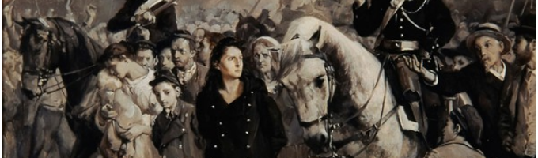
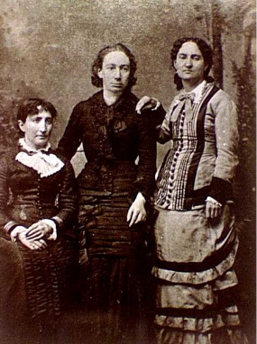
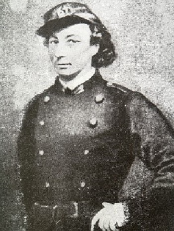

"Je suis triste au poète et sous ton verre laurier ma + 12 retraite je viens de poser ma tête pour rêver et prier à l'ombre de Tal hier je trouve le repos je dors sur ton à Vire et le vent qui soupire me berce sur les flots dis-moi quel ange inspire des accents qu'elle m'a dit étrange à ta voix se mélangent quelques dicte Deschamps que ta voix me répondre quand ma divine appelle loin des 20 bruits du monde parmi les vivants Landes dans un souffle du ciel flamme au frère dis l'émoi carte on a amené mon homme on t'accuse ou te blâme mais moi je crois en toi à toi lumière ardente roi soleil radieux dans la course éclatante viens pour étoile errante